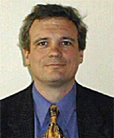

|
| |
Note: Concurrent sessions used a variety of presentation and round table discussion formats. All available presentations have been posted. |
| |
Moderator and Speaker Bios and Presentations |
|
The Future of Transport Demand  pdf pdf  ppt ppt
Andy S. Kydes is the Senior Technical Advisor to the Office of Integrated Analysis and Forecasting. He performs quality assurance for the design and development of the National Energy Modeling System and acts as senior technical advisor to the Office on all matters relating to forecasting, analysis, and use of the computing technologies to facilitate use of NEMS. Prior to joining the Energy Information Administration in 1992, he taught applied mathematics and statistics on the faculty of the State University of New York at Stony Brook, directed the Energy-Economics Systems Analysis Division at Brookhaven National Laboratory, and managed the Gas Forecasting, Planning and Financial Matters at Consolidated Edison Company of New York. He received his B.A. from Harvard University in Engineering and Applied Physics. He received his M.S. in 1973 and his Ph.D. in 1974 in Applied Mathematics and Statistics from the State University of New York at Stony Brook. |
|  |
IEA Transport Energy Outlook pdf ppt
Lew Fulton has worked internationally in the field of transport/energy policy analysis for 20 years. He is a senior transport energy specialist with the International Energy Agency, Paris, where he recently returned after working there from 1999-2005. During 2006-2007 he worked in Kenya with the United Nations Environment Program, on developing and implementing sustainable transport projects around the world, leveraging funding from the Global Environment Facility (GEF). His IEA reports include Energy Technology Perspectives 2008 (co-author), and lead author on Saving Oil in a Hurry (2005), Biofuels for Transport: An International Perspective (2004) Bus Systems for the Future (2002) and Saving Oil in Transport: Options and Strategies (2001). Previous positions have included the U.S. Department of Energy, Office of Policy (1992-1996) and the Independent University, Bangladesh (1996-1997). He received his Ph.D. in Energy Management and Environmental Policy from the University of Pennsylvania in 1994. |
|
Transportation’s Energy Transition pdf ppt
David Greene is a Corporate Fellow of Oak Ridge National Laboratory and Visiting Researcher at the Institute for Transportation Studies at theUniversity of California at Davis. He has researched transportation energy and policy issues for over 30 years. He has authored or co-authored more than two hundred professional publications and is the recipient of four “best paper” awards from scientific societies. Dr. Greene has been active in the Transportation Research Board and National Research Council for over 25 years, serving on numerous standing and ad hoc committees dealing with energy and environmental issues. In recognition of this service, he was designated a lifetime National Associate of the National Academies. The Intergovernmental Panel on Climate Changes recognized Dr. Greene for his contributions to three assessment reports and also to the IPCC’s receipt of the Nobel Peace Prize. He received his B.A. in geography from Columbia University in 1971 and his M.A. in geography in 1973 from the University of Oregon. He obtained his Ph.D. in geography and environmental engineering in 1978 from Johns Hopkins University. |
|
Looking Before You Leap into A Model: A New Climate for Seeing Transport Energy Futures? pdf ppt
Lee Schipper is Project Scientist at Global Metropolitan Studies University of California, Berkeley and Senior Research Engineer, Precourt Energy Efficiency Center at Stanford University. He works on transportation issues around the world, with particular attention to CO2 emissions, fuels, and local air pollution. He devoted his career to earthly problems of transport, energy and environment. He is also Senior Associate Emeritus of EMBARQ, and previously served as Director of Research for EMBARQ, the World Resources Institute (WRI) Center for Sustainable Transport in Washington DC. He was a visiting Scientist at the International Energy Agency (IEA) in Paris. Prior to that he was Staff Senior Scientist at the Lawrence Berkeley National Laboratory for two decades. He worked in Group Planning at Shell International Petroleum Company in the 1980s and again in 2001, where he worked on two sets of Shell Scenarios. He has been a guest researcher at the Energy Department of the World Bank, VVS Tekniska Foerening (Stockholm), the OECD Development Center, and the Stockholm Environment Institute. He received his Ph.D. at Berkeley in astrophysics and his B.A. in Music from Berkeley in 1968. |
| |